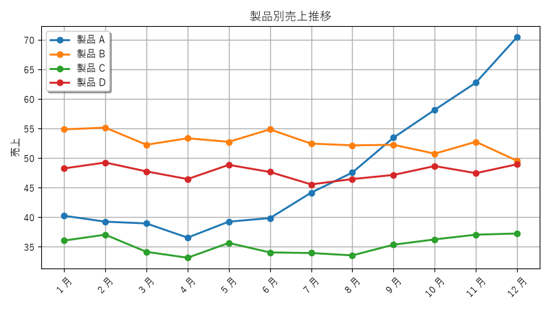
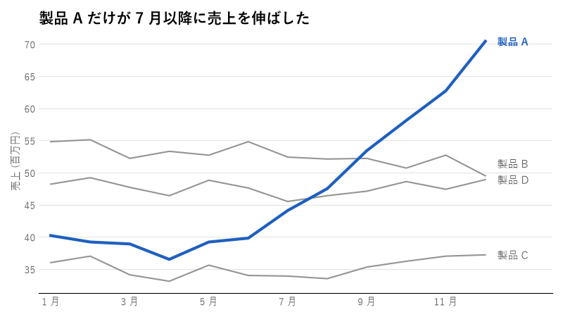
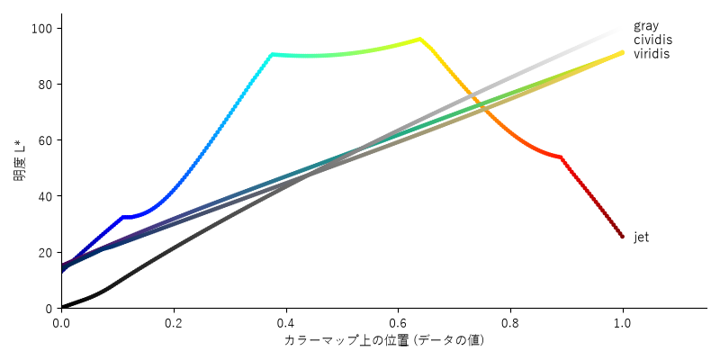
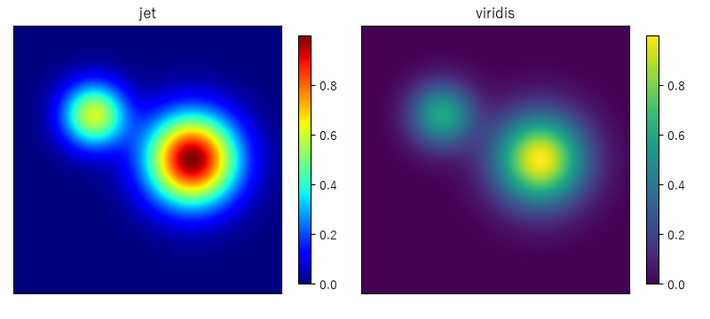

5. データ可視化のデザイン
グラフは、数値の表だけでは気付きにくい傾向や差を、ひと目で伝えるための道具です。matplotlib の既定の設定でもグラフは描けますが、そのままでは「何を読み取ってほしいのか」が伝わりにくいことがあります。本章では、目的に合ったグラフを選び、要点が伝わるように仕上げる方法を説明します。
5.1. 目的に応じたグラフの選び方
グラフの種類は、データの形ではなく、伝えたいことで選びます。
伝えたいこと |
適したグラフ |
注意点 |
|---|---|---|
量の比較 |
棒グラフ（項目名が長い場合は横棒） |
値の軸は必ず 0 から始めます。項目に順序がなければ値の順に並べます。 |
時間的な推移 |
折れ線グラフ |
軸は 0 から始めなくてもよいものの、変化を誇張しないようにします。 |
構成比 |
積み上げ棒グラフ、並べ替えた棒グラフ |
円グラフは項目が少なく、差が大きい場合に限ります。 |
分布 |
ヒストグラム、箱ひげ図 |
ヒストグラムは、ビンの幅によって印象が変わります。 |
2 つの量の関係 |
散布図 |
点が重なる場合は、点を半透明にするか小さくします。 |
棒グラフは、棒の長さで量を表します。値の軸を 0 から始めないと、棒の長さの比が値の比と一致しなくなり、差が誇張されて見えます。折れ線グラフは、線の傾きで変化を表すため、軸を 0 から始める必要はありません。
円グラフは、扇形の角度や面積で割合を表します。人は角度や面積の差を正確に比べるのが苦手なため、項目が多い場合や、割合が近い項目を比べたい場合には向きません。
5.2. データインク比とチャートジャンク
統計学者の Edward Tufte は、グラフの描画に使うインクのうち、データそのものを表すインクの割合を「データインク比」と呼び、この比を高くすべきだと主張しました。データを表さない装飾、たとえば 3D 効果、影、濃いグリッド線、背景の模様などは「チャートジャンク」と呼ばれ、読み手の注意をデータからそらします。
ただし、目盛りや軸ラベルのように、データを正しく読むために必要な要素まで削ってはいけません。削るのは「なくても読み方が変わらないもの」に限ります。
5.3. グラフを改善する手順
図 5.1 は、製品 A〜D の月次売上を matplotlib で描いたものです。

図 5.1 改善前：どの系列に注目すればよいか分からない
このグラフには、次の問題があります。
4 本の線が同じ強さで描かれ、どれに注目すればよいか分かりません。
凡例と線を目で往復して、色の対応を確認する必要があります。
濃いグリッド線、影付きの凡例、すべての点のマーカーが、線の形を見えにくくしています。
縦軸に単位がありません。
このグラフで伝えたいことが「製品 A だけが 7 月以降に売上を伸ばした」であれば、次の手順で改善します。
結論をタイトルにする：グラフの内容を説明するタイトル（「製品別売上推移」）ではなく、読み取ってほしい結論をタイトルにします。
強調する系列を 1 つに絞る：注目してほしい系列だけにアクセントカラーを使い、ほかは灰色にします。
凡例をやめて直接ラベルを付ける：線の右端に系列名を書き、凡例との往復をなくします。
不要な要素を消す：上・右・左の枠線、目盛りの線、縦のグリッド線、マーカーを消し、横のグリッド線は薄くします。
単位を明記する：軸ラベルに「（百万円）」などの単位を書きます。

図 5.2 改善後：結論をタイトルにし、製品 A だけを強調した
改善後のグラフを描くコードは次のとおりです。強調しない系列を先に描き、強調する系列を最後に描くことで、強調する線が常に最前面に表示されます。
def plot_after(sales: pd.DataFrame, path: Path, focus: str) -> None:
"""focus の系列だけを強調し、結論をタイトルにしたグラフ。"""
fig, ax = plt.subplots(figsize=(8, 4.5))
x = np.arange(len(sales.index))
# 強調しない系列を先に描き、強調する系列を最前面に描く
others = [column for column in sales.columns if column != focus]
for column in others:
ax.plot(x, sales[column], color=MUTED, linewidth=1.5)
ax.plot(x, sales[focus], color=HIGHLIGHT, linewidth=3)
# 凡例の代わりに、線の右端へ系列名を直接書く (重ならないように調整)
last_values = [float(sales[column].iloc[-1]) for column in sales.columns]
label_y = spread_labels(last_values, min_gap=2.5)
for column, y in zip(sales.columns, label_y):
is_focus = column == focus
ax.text(x[-1] + 0.3, y, column,
va="center", fontsize=11,
color=HIGHLIGHT if is_focus else TEXT_SUB,
fontweight="bold" if is_focus else "normal")
# タイトルで結論を述べ、単位は軸ラベルで示す
ax.set_title(f"{focus} だけが 7 月以降に売上を伸ばした", loc="left",
fontsize=15, fontweight="bold")
ax.set_ylabel("売上 (百万円)", color=TEXT_SUB)
ax.set_xticks(x[::2], sales.index[::2])
ax.set_xlim(-0.3, len(x) + 0.7)
# 上・右・左の枠線と目盛りの線を消し、補助線は横方向だけ薄く表示する
for side in ("top", "right", "left"):
ax.spines[side].set_visible(False)
ax.grid(axis="y", color="#e5e5e5", linewidth=0.8)
ax.set_axisbelow(True)
ax.tick_params(colors=TEXT_SUB, length=0)
fig.tight_layout()
fig.savefig(path, dpi=100, facecolor="white")
plt.close(fig)
直接ラベルは、線の終点が近いと重なってしまいます。次の関数で、ラベルどうしの間隔が一定以上になるように y 座標を調整しています。
def spread_labels(values: list[float], min_gap: float) -> list[float]:
"""ラベルの y 座標が min_gap 以上離れるように調整した値を返す。
値の小さい順に見ていき、直前のラベルと近すぎる場合は上へずらす。
戻り値の順序は引数と同じ。
"""
order = sorted(range(len(values)), key=lambda i: values[i])
adjusted = list(values)
for prev, curr in zip(order, order[1:]):
adjusted[curr] = max(adjusted[curr], adjusted[prev] + min_gap)
return adjusted
5.4. カラーマップの選び方
ヒートマップや等高線図のように、数値を色で表すときに使う色の並びをカラーマップと呼びます。カラーマップは、データの性質に合わせて次の 3 種類から選びます。
種類 |
用途 |
matplotlib の例 |
|---|---|---|
順序（sequential） |
小さい値から大きい値へ、一方向に変化するデータ |
|
発散（diverging） |
基準値（0 や平均値）からの上下の差を表すデータ |
|
質的（qualitative） |
順序のないカテゴリの区別 |
|
順序のあるデータを表すカラーマップでは、値が大きくなるにつれて明度も一方向に変化することが重要です。色相には自然な大小の順序がないため、色相の違いから数値の大小を読み取るのは難しい一方で、明度の違いからは直感的に読み取れるためです。
明度の変化を確認するため、カラーマップ上の各色の CIE L*a*b* の明度 \(L^*\) を計算します。\(L^*\) は、相対輝度（色彩を参照）と同じ方法で求めた輝度 \(Y\) から、次の式で計算できます。\(Y\) は、白で 1、黒で 0 になります。
def lightness(srgb: FloatArray) -> FloatArray:
"""(N, 3) の sRGB (0〜1) 配列から CIE L* (0〜100) を計算する。"""
linear = np.where(srgb <= 0.04045, srgb / 12.92,
((srgb + 0.055) / 1.055) ** 2.4)
y = linear @ RGB_TO_XYZ[1] # L* の計算には Y (輝度) だけを使う
epsilon = (6 / 29) ** 3
f = np.where(y > epsilon, np.cbrt(y), y / (3 * (6 / 29) ** 2) + 4 / 29)
result: FloatArray = 116 * f - 16
return result
図 5.3 は、4 つのカラーマップについて、位置と明度 \(L^*\) の関係を描いたものです。点の色は、その位置のカラーマップの色です。

図 5.3 カラーマップの位置と明度 \(L^*\) の関係
viridis、cividis、gray では、明度が位置に応じて単調に増えています（viridis と cividis はほぼ一直線です）。一方、jet は、明度が途中で急に上がって平らになり、その後は下がります。このため、jet には次の問題があります。
明度が急に変わる位置に、データにはない境界線が見えます。
明度が単調に増えないため、グレースケールで印刷すると値の大小が分からなくなります。
赤と緑を含むため、色覚によっては区別しにくくなります。
図 5.4 は、同じデータを jet と viridis で描いたものです。jet では、山の周囲に水色の輪のような境界が見えますが、これはデータにはない構造です。

図 5.4 同じデータを jet と viridis で描いた比較
matplotlib は、バージョン 2.0 から既定のカラーマップを jet から viridis に変更しています。特別な理由がない限り、順序のあるデータには viridis を使います。色覚の多様性への配慮をより重視する場合は cividis を使います。
5.5. まとめ
グラフの種類は、伝えたいこと（比較・推移・構成比・分布・関係）で選びます。
棒グラフの値の軸は 0 から始めます。
結論をタイトルにし、強調する系列を 1 つに絞ります。
凡例より直接ラベルを使い、データを表さない装飾は消します。
順序のあるデータには、明度が単調に変化する
viridisなどのカラーマップを使います。
5.6. サンプルコード
ch05_chart_before_after.py：図 5.1 と図 5.2 を描画します。ch05_colormap.py：図 5.3 と図 5.4 を描画します。